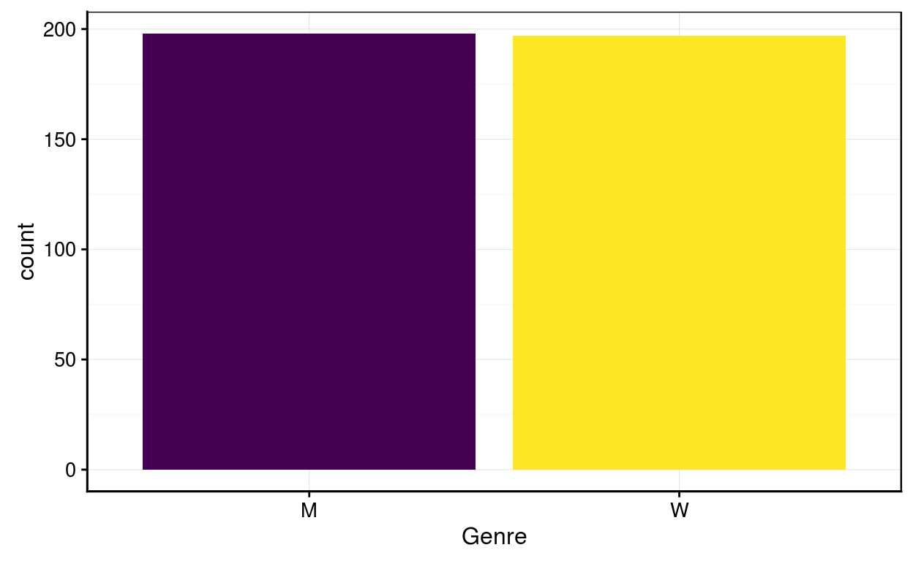
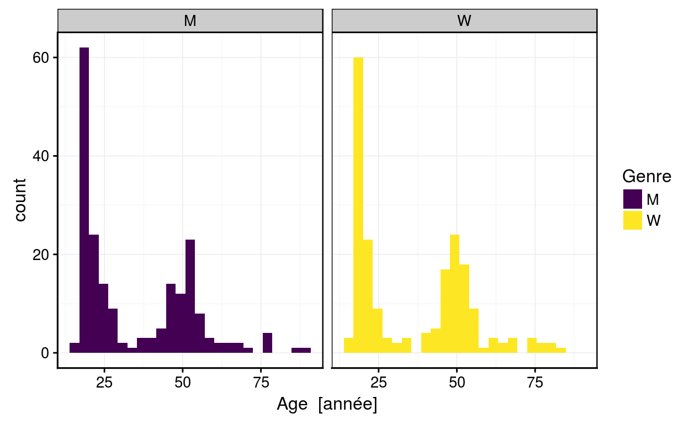
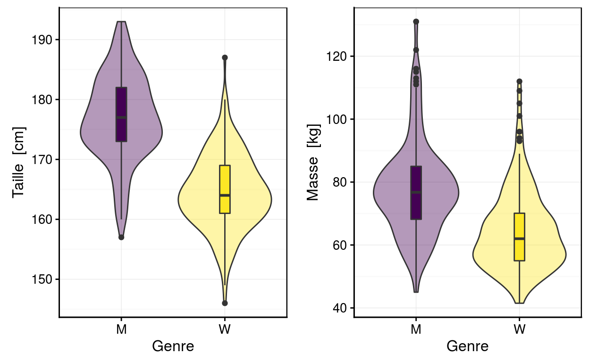
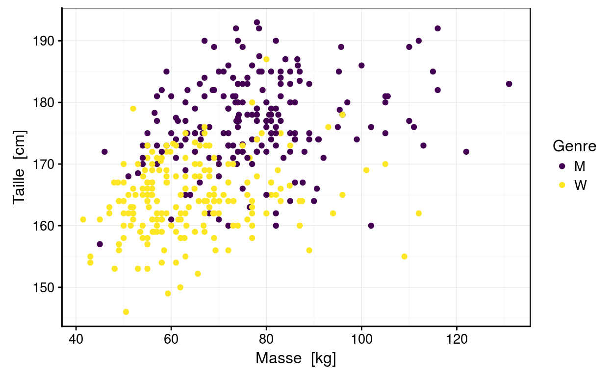
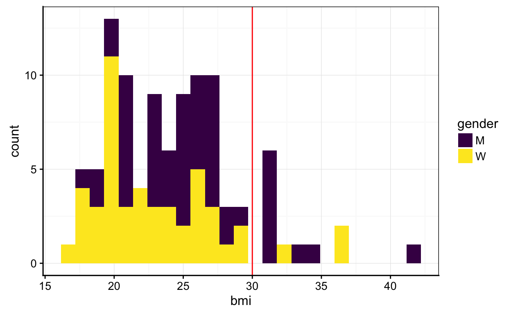

Science des données biologiques
Réalisé par le service d'Écologie numérique des Milieux aquatiques, Université de Mons (Belgique)Préambule
Si vous n’avez jamais utilisé de tutoriel “learnr”, familiarisez-vous d’abord avec son interface ici.

Conformément au RGPD (Règlement Général sur la Protection des Données), nous sommes tenus de vous informer de ce que vos résultats seront collectés afin de suivre votre progression. Les données seront enregistrées au nom de l’utilisateur apparaissant en haut de cette page. Corrigez si nécessaire ! En utilisant ce tutoriel, vous marquez expressément votre accord pour que ces données puissent être collectées par vos enseignants et utilisées pour vous aider et vous évaluer. Après avoir été anonymisées, ces données pourront également servir à des études globales dans un cadre scientifique et/ou éducatif uniquement.
Objectif
- Utilisation guidée du logiciel R afin de résoudre une question sur l’obésité

Introduction
R est un programme Open Source qui permet la manipulation, la visualisation et les calculs (statistiques) sur des données.
Manipuler
En partant d’un tableau de données relatif à de la biométrie humaine contenant 395 observations et 7 variables :
# Chargement de SciViews::R
SciViews::R
# Importation du jeu de données
(biometry <- read("biometry", package = "BioDataScience", lang = "fr"))Notez ceci :
Les encadrés gris dénotent des instructions entrées dans R. Si ce dernier renvoie des résultats, ils sont présentés dans des encadrés blancs juste en dessous (pas le cas ici).
Toujours commencer par l’instruction
SciViews::Rpour installer les différents outils (rassemblés dans des “packages” R) dont nous aurons besoin.Le jeu de données est disponible dans un package R :
BioDataScience, spécialement préparé pour ce cours.L’anglais est la langue la plus employée en science des données. Les jeux de données employées seront encodés en anglais.
Le point d’interrogation devant notre jeu de données renvoit vers une page d’aide.
?biometry
biometry %>.%
select(., -c(day_birth, wrist, year_measure)) -> bioNotez ceci :
Nous utilisons ici le chaînage (%>.%) et une sélection en éliminant des colonnes du tableau que nous n’utiliserons pas (la 3ème, la 7ème et la 8ème).
Lorsqu’on utilise un chaînage d’instructions, l’assignation du résultat est plus lisible quand elle est réalisée à la fin (-> bio).
La fonction kable() du package knitr peut être appelée directement sans charger le package à l’aide de l’instruction knitr::kable(). Elle permet de formatter correctement un tableau dans Markdown. Utilisons-là maintenant pour présenter les huit premières lignes de notre jeu de données.
bio %>.%
head(., n = 8) %>.% # Garde les huit premières lignes
knitr::kable(., align = "c")| gender | weight | height | age |
|---|---|---|---|
| M | 69 | 182 | 18 |
| M | 74 | 190 | 15 |
| M | 83 | 185 | 46 |
| M | 60 | 175 | 19 |
| W | 48 | 167 | 23 |
| W | 52 | 179 | 19 |
| W | 72 | 167 | 42 |
| W | 74 | 180 | 16 |
Considérons maintenant uniquement les femmes. On peut filtrer simplement les lignes d’un tableau de données en utilisant comme critère gender == "W" (attention : notez bien que dans un test de condition, l’égalité s’écrit avec deux signes égaux dans R). Les autres options sont : != pour différent de, > pour plus grand que, < pour plus petit que, ainsi que >= ou <= pour plus grand ou égale et plus petit ou égal.
bio %>.%
filter(., gender == "W") %>.%
head(., n = 8) %>.% # Garde les huit premières lignes
knitr::kable(., align = "c")| gender | weight | height | age |
|---|---|---|---|
| W | 48 | 167 | 23 |
| W | 52 | 179 | 19 |
| W | 72 | 167 | 42 |
| W | 74 | 180 | 16 |
| W | 61 | 154 | 47 |
| W | 57 | 164 | 49 |
| W | 58 | 162 | 76 |
| W | 61 | 168 | 53 |
Continuons à manipuler notre tableau en sélectionnant des colonnes et en filtrant les lignes en une seule opération. Pour sélectionner les femmes gender == "W" et retirer la colonnes age, nous utiliserons :
bio %>.%
filter(., gender == "W") %>.% # sélectionne les femmes
select(., - age) %>.% # retire la colonne age
head(., n = 8) %>.% # Garde les huit premières lignes
knitr::kable(., align = "c")| gender | weight | height |
|---|---|---|
| W | 48 | 167 |
| W | 52 | 179 |
| W | 72 | 167 |
| W | 74 | 180 |
| W | 61 | 154 |
| W | 57 | 164 |
| W | 58 | 162 |
| W | 61 | 168 |
Maintenant que nous avons vu comment lire, remanier et présenter des tableaux de données dans R (nous reviendrons sur ces notions plus tard), nous pouvons explorter ses potentialités pour réaliser des graphiques à la section suivante…
Visualiser
Voici quelques exemples de graphiques réalisés avec R, sur notre jeu de données portant sur la biométrie humaine :
- Le graphique en barre nous montre que le nombre d’homme et de femme est similaire.
chart(biometry, ~ gender %fill=% gender) +
geom_bar(show.legend = FALSE) +
scale_fill_viridis_d()
- Les histogrammes nous montrent que les personnes intérogées forment deux groupes. l’un proche de la vingtaine et le second proche de la cinquantaine.
chart(biometry, ~ age %fill=% gender | gender)+
geom_histogram(bins = 25) +
scale_fill_viridis_d()
- Les graphiques en violon couplés avec des boites de dispersion montrent que les hommes sont plus grands et plus lourds que les femmes dans notre jeu de données.
a <- chart(biometry, formula = height ~ gender %fill=% gender) +
geom_violin(show.legend = FALSE, alpha = 0.4) +
geom_boxplot(width = 0.1, show.legend = FALSE) +
scale_fill_viridis_d()
b <- chart(biometry, formula = weight ~ gender %fill=% gender) +
geom_violin(show.legend = FALSE, alpha = 0.4) +
geom_boxplot(width = 0.1, show.legend = FALSE) +
scale_fill_viridis_d()
ggpubr::ggarrange(a,b)
- Le nuage de points nous montre la variation de la taille en fonction de la masse.
chart(biometry, height ~ weight %col=% gender) +
geom_point() +
scale_color_viridis_d()
Ceci n’est qu’un bref aperçu des possibilités que propose R, vous en découvrirez une partie lors des cours de science de données.
L’obésité
Plusieurs médias publient ou ont publié récemment des articles avec des titres accrocheurs comme obésité, le mal du siècle, 13% de la population adulte mondiale est obèse, 20% pourrait l’être en 2025 ou encore obésité et malnutrition, fléaux du XXIe siècle. Ils se basent sur plusieurs déclarations de l’Organisation Mondiale de la Santé (OMS) indiquant que la lutte contre l’obésité sera l’un des défis majeurs pour la santé publique au 21ième siècle. L’OMS estime que 1.5 milliards de personnes sont en surpoids actuellement et ce chiffre va augmenter si rien ne change.

Une multitude d’indicateurs pour quantifier l’excédent de poids ont été employés au cours du temps (formule de Lorentz, formule de Creff ou encore formule de Broca). Actuellement, c’est l’indice de masse corporelle (IMC, ou encore BMI en anglais) qui est l’indicateur le plus employé. La formule est la suivante :
\[IMC (kg/m^2) = \frac{masse(kg)}{taille(m)^2}\]
ou encore en anglais :
\[BMI (kg/m^2) = \frac{weight(kg)}{height(m)^2}\]
Une fois la valeur obtenue de l’IMC, il faut la comparer au tableau ci-dessous pour connaitre son état de santé.
| IMC (kg/m2) | Interprétation (selon l’OMS) |
|---|---|
| Inférieur 18.5 | Sous-poids (en anglais underweight) |
| Entre 18.5 et 25 | Corpulence normale (en anglais normal weight) |
| Entre 25 et 30 | Surpoids (en anglais overweight) |
| Supérieur à 30 | Obésité (en anglais obese) |
Nous allons maintenant avancez pas à pas dans cette première analyse avec R. Le but est de calculer l’IMC (BMI), et puis de visualiser comment cet indice se répartit dans la population étudiée.
Calcul de l’IMC
Les premières personnes dont vous avez les résultats sont les suivantes :
| id | gender | weight [kg] | height [cm] |
|---|---|---|---|
| 1 | W | 50 | 170 |
Rappelez-vous de la formule qui est :
\[BMI (kg/m^2) = \frac{weight(kg)}{height(m)^2}\]
On peut employer les opérations mathématiques de base avec R. Elles respectent l’ordre de priorité des opérateurs mathématiques. Au besoin, il est possible d’indiquer explicitement, ou de modifier les priorités avec des parenthèses comme 3 * (2 + 1).
| Opérations de base | Symboles |
|---|---|
| addition | + |
| soustraction | - |
| division | / |
| multiplication | * |
| puissance | ^ |
La formule mathématique se traduit donc comme suit en une instruction que R peut utiliser :
50 / 1.70^2[1] 17.30104Notez ceci : R indique un [1] devant la réponse. En fait, R travaille avec des vecteurs (même si ici, le vecteur ne contient qu’un seul élément). Ainsi, le nombre entre crochets devant indique la position dans le vecteur. Ce calcul sur vecteurs nous sera très utile lorsque nous traiterons l’ensemble du tableau. En effet, le même calcul sera automatiquement distribué sur tous les individus !
L’IMC de cette femme indique qu’elle est en sous-poids selon l’échelle de l’OMS.
Réalisez maintenant par vous-mêmes le calcul sur notre deuxième individu :
| id | gender | weight [kg] | height [cm] |
|---|---|---|---|
| 2 | M | 93 | 191 |
L’espace ci-dessous est une zône où vous pouvez entrer du code R. Le bouton Run Code permet ensuite de l’exécuter et de visualiser le résultat. Vous pouvez modifier autant de fois qu’il faut l’expression, et utiliser plusieurs fois Run Code. Lorsque vous êtes satisfait du résultat, cliquez sur Submit Answer. Dans les tutoriaux, la Solution est également accessible, mais faites l’exercice par vous-même d’abord ! Dans les tests, vous n’y aurez pas accès, évidemment.
Calculez l’IMC de l’homme ci-dessus de 191 cm et de 93 kg.
93 / 1.91^2# Not yet...L’IMC de cet homme indique que cet homme est par contre en surpoids selon l’échelle de l’OMS.
Calcul de l’IMC sur plusieurs individus
Vous vous retrouvez rapidement avec 5 nouveaux individus femmes et hommes.
| id | gender | weight [kg] | height [cm] |
|---|---|---|---|
| 3 | W | 69 | 174 |
| 4 | W | 49 | 155 |
| 5 | W | 75 | 169 |
| 6 | W | 66 | 179 |
| 7 | W | 54 | 168 |
Le calcul un à un de l’IMC de chaque individu deviendra très rapidement fastidueux. R permet de créer des vecteurs que l’on peut affecter à des symboles avec la flèche <- (constituée du signe plus petit que immédiatemment suivi du signe moins) comme le montre l’exemple ci-dessous. Pour rassembler plusieurs valeurs dans un vecteur on les “concatène”s avec la fonction c() :
# Assignation des valeurs de masses dans un vecteur nommé `weight`
weight_w <- c(69, 49, 75, 66, 54)
# Assignation des valeurs de tailles dans un vecteur nommé `height`
height_w <- c(174, 155, 169, 179, 168)
# Transformation du vecteur `height_w` de centimètre en mètre
height_w <- height_w/100
# Calcul de l'IMC/ BMI
weight_w / height_w^2[1] 22.79033 20.39542 26.25958 20.59861 19.13265Important :
Choisissez bien les noms de vos objets. Ces noms doivent être courts, mais informatifs concernant leur contenu.
Rappelez-vous que des noms acceptables commencent par une lettre, et comportent ensuite des lettres, chiffres, le trait souligné
_ou le point..Comme il est difficile de mémoriser la casse d’un nom, il est conseillé d’utiliser uniquement des lettres minuscules.
Si le nom est constitué de plusieurs mots, il est préférable de séparer ces mots par un trait souligné. Pour rappel, l’espace n’est pas utilisable. Par exemple,
circomference_poignet.Eviter d’utiliser des caractères accentués.
Si possible, utilisez des noms en anglais. Certainement si votre travail sera échangé avec d’autres scientifiques en international, … mais c’est une bonne habitude à prendre même sur votre propre code. Pour reprendre l’exemple précedent
wrist_circumference
Réalisez les mêmes opérations sur les individus de 8 à 12.
| id | gender | weight [kg] | height [cm] |
|---|---|---|---|
| 8 | M | 82 | 174 |
| 9 | M | 73 | 186 |
| 10 | M | 105 | 203 |
| 11 | M | 61 | 172 |
| 12 | M | 95 | 190 |
# Assignation des valeurs de masses dans un vecteur nommé `weight_m`
weight_m <- c()
# Assignation des valeurs de tailles dans un vecteur nommé `height_m`
height_m <-
# Transformation du vecteur `height` de centimètre en mètre
height_m <- height_m/100
# Calcul de IMCVous obtenez les 5 valeurs d’IMC d’une seule fois avec l’utilisation de vecteurs.
# Assignation des valeurs de masses dans un vecteur nommé `masse2`
weight_m <- c(82, 73, 105, 61, 95)
# Assignation des valeurs de tailles dans un vecteur nommé `taille2`
height_m <- c(174, 186, 203, 172, 190)
# Transformation du vecteur `height` de centimètre en mètre
height_m <- height_m/100
# Calcul de IMC
weight_m / height_m^2# Not yet...Encodage d’un tableau de données
Il devient rapidement évident qu’il est plus simple que nos observations de terrain soient rassemblées en un jeu de données structuré. Pour cela vous allez créer ce qu’on appelle un “data frame” (qui se traduit en français par “tableau de données”) dans R. La fonction qui permet de le créer est data_frame(). Cette dernière permet de combiner vos différents vecteurs colonne par colonne dans un tableau.
Dans data_frame(), vous entrerez vos différents vecteurs comme autant d’arguments de la fonction, séparés par une ,. De plus, vous pouvez nommer vos colonnes en donnant des noms aux arguments de type nom = valeur. Analysez avec attention l’exemple ci-dessous.
# Création du tableau de données (data frame)
woman <- data_frame(
id = 3:7, # Valeurs numériques
sex = rep("W", times = 5), # Chaines de caractères (! guillemets)
weight = weight_w, # Vecteur de masses fait précédemment
height = height_w # Vecteur de tailles fait précédemment
)
# Afficher le tableau
womanAvez-vous remarqué la différence dans la façon d’encoder des valeurs numériques et des chaines de caractères ?
Réalisez-les mêmes opérations sur les individus de 8 à 12 (inspirez vous des instructions ci-dessus) :
| id | gender | weight [kg] | height [cm] |
|---|---|---|---|
| 8 | M | 82 | 174 |
| 9 | M | 73 | 186 |
| 10 | M | 105 | 203 |
| 11 | M | 61 | 172 |
| 12 | M | 95 | 190 |
# Assignation des valeurs de masses dans un vecteur `masse2`
weight_m <- c(82, 73, 105, 61, 95)
# Assignation des valeurs de tailles dans un vecteur `taille2`
height_m <- c(1.74, 1.86, 2.03, 1.72, 1.90)# Encodage du jeu de données
man <- data_frame(
id = ,
sex = ,
weight = ,
height =
)
# Afficher le tableau# Encodage du jeu de données
man <- data_frame(
id = 8:12,
sex = rep("M", times = 5),
weight = weight_m,
height = height_m
)
# Afficher le tableau
man# Not yet...Calculez de nouveau l’IMC et ajoutez vos résultats dans le tableau de données. Vous avez à votre disposition la fonction mutate() qui requiert comme argument le jeu de données et le nom de la nouvelle variable comme nom d’argument suivi de la formule mathématique qui calcule son contenu.
# Calculer l'IMC pour les femmes
woman <- mutate(woman, bmi = weight / height^2)
# Afficher le tableau de données
womanA retenir :
Vous pouvez vous référer à d’autres colonnes du tableau (= autres variables) en utilisant leurs noms directement dans la formule,
La ou les nouvelles colonnes sont ajoutées à la fin du tableau et sont directement utilisables.
Réalisez par vous-mêmes les mêmes opérations sur le jeu de données man.
# Assignation des valeurs de masses dans un vecteur `masse2`
weight_m <- c(82, 73, 105, 61, 95)
# Assignation des valeurs de tailles dans un vecteur `taille2`
height_m <- c(1.74, 1.86, 2.03, 1.72, 1.90)
# Dataset
man <- data_frame(
id = 8:12,
sex = rep("M", times = 5),
weight = weight_m,
height = height_m
)# Calculer l'IMC pour les hommes
man <- mutate(man, bmi = )
# Afficher le tableau de données# Calculer l'IMC pour les hommes
man <- mutate(man, bmi = weight / height^2)
# Afficher le tableau de données
man# Not yet...Vous pouvez observer que tout comme le tableau de données portant sur les femmes, vous obtenez une nouvelle colonne au sein de votre tableau de données portant le nom de bmi (pour “Body Mass Index”, soit l’IMC en français).
13% de la population adulte mondiale est obèse
Le monde titre que 13% de la populaton mondiale est obèse. Vérifiez cette affirmation avec le jeu de données biometry qui regroupe les masses et les tailles de 395 personnes adultes vivant sur le territoire belge (Hainaut, Belgique). Nous allons également tirer au hasard 100 individus comme sous-échantillon de ce tableau (à titre d’illustration d’autres traitements possibles sur le tableau). La fonction qui réalise cela est sample_n(). La fonction set.seed() prend un nombre et initialise le générateur de nombres dit “pseudo-aléatoires” pour que tout le monde ait le même sous-ensemble. En pratique, cette instruction est facultative, mais elle est utile pour générer des résultats reproductibles. Indiquez naturellement un nombre différent, à chaque fois que vous l’utiliser !
biometry <- read("biometry", package = "BioDataScience")
set.seed(50) # Initialisation du générateur de nombres pseudo-aléatoires
biometry %>.%
sample_n(., size = 100, replace = FALSE) -> bio_100
# Echantillonnage au hasard de 100 individus
bio_100Vous pouvez observer que la taille est ici exprimée en centimètres, il faut en tenir compte lors du calcul de l’IMC qui attend la taille exprimée en m. Un jeu de données réduit est employé pour expliciter les suites d’instructions bio_100 qui comprend uniquement 100 observations.
Pour calculer l’IMC sur le jeu de données bio_100, nous employons à nouveau la fonction mutate().
bio_100 <- mutate(bio_100, bmi = weight / (height / 100)^2)
# Afficher les premières lignes du tableau de données
head(bio_100, n = 5)Calculez l’IMC sur le jeu de données biometry tout entier.
# Calcul de le BMI
# Affichage des premières lignes du tableau de données# Calcul de l'IMC
biometry <- mutate(biometry, bmi = weight / (height / 100)^2)
# Affichage des premières lignes du tableau de données
head(biometry, n = 5)# Not yet...Signification de l’IMC selon l’échelle de l’OMS
Une fois la valeur obtenue de l’IMC, il faut lui attribuer son interprétation pour connaitre son état de santé.
| IMC (kg/m2) | Interprétation (selon l’OMS) |
|---|---|
| Inférieur 18.5 | Sous-poids (en anglais underweight) |
| Entre 18.5 et 25 | Corpulence normale (en anglais normal weight) |
| Entre 25 et 30 | Surpoids (en anglais overweight) |
| Supérieur à 30 | Obésité (en anglais obese) |
Vous avez à votre disposition la fonction case_when() qui permet d’attribuer l’interprétation de l’OMS à la valeur d’IMC. Vous devez lui indiquer d’une part la condition (ex. : bmi < 18.5), et d’autre part son interprétation (ex. : underweight), le tout séparé par un ~. Vous pouvez retrouver les conditions ci-dessous.
| Condition | Représentation |
|---|---|
| Egal à | == |
| Différent de | != |
| Supérieur à | > |
| Inférieur à | < |
| Supérieur ou égal à | >= |
| Inférieur ou égal à | <= |
| Et (combinaison de tests) | & |
| Ou (idem) | | |
Ajoutez une nouvelle variable qui tient compte de l’échelle de l’OMS avec le jeu de données bio_100. Analysez la structuration de la suite d’instructions, les conditions employées, la position des guillemets, …
# Ajouter la nouvelles variable
bio_100 <- mutate(bio_100,
bmi_schedule = case_when(
bmi < 18.5 ~ "underweight",
bmi >= 18.5 & bmi < 25 ~ "normal weight",
bmi >= 25 & bmi < 30 ~ "overweight",
bmi >= 30 ~ "obese"
))
# Afficher le tableau
bio_100Ajoutez une nouvelle variable au jeu de données biometry en complétant les informations manquantes.
biometry <- read("biometry", package = "BioDataScience")
biometry <- mutate(biometry, bmi = weight / (height / 100)^2)# Ajouter la nouvelles variable
<- mutate( ,
bm_schedule = case_when(
bmi ~ "underweight",
bmi ~ "normal weight",
bmi ~"overweight",
bmi ~ "obese"
))
# Afficher le début du tableau
head( )# Ajouter la nouvelles variable
bio <- mutate(biometry,
bmi_schedule = case_when(
bmi ~ "underweight",
bmi ~ "normal weight",
bmi ~"overweight",
bmi ~ "obese"
))
# Afficher le début du tableau
head()# Ajouter la nouvelles variable
biometry <- mutate(biometry,
bmi_schedule = case_when(
bmi < 18.5 ~ "underweight",
bmi >= 18.5 & bmi < 25 ~ "normal weight",
bmi>= 25 & bmi < 30 ~"overweight",
bmi >= 30 ~ "obese"
))
# Afficher le début du tableau
head(biometry)# Not yet...Votre nouvelle variable comprend une succession de lignes complétées par des chaines de caractères. Organisez cette variable de votre tableau de données avec la fonction factor(). Observez la nouvelle structuration de la suite d’instructions. Vous observez pour la première fois l’opérateur $. Dans l’exemple ci-dessous, lorsque vous utilisez bio_100$echelle_imc, vous pouvez l’interprétez comme : "dans le tableau de données bio_100, je prend la colonne/variable echelle_imc. La fonction factor() s’applique donc sur cette colonne (dont le vecteur est extrait). Avec l’argument levels, vous spécifiez l’ordre des différents niveaux de votre variable à classer.
Classer votre nouvelle variable avec le jeu de données bio_100.
bio_100$bmi_schedule <- factor(bio_100$bmi_schedule,
levels = c("underweight", "normal weight", "overweight", "obese"))
bio_100En apparence, pas grand changement, mais maintenant, nous avons indiqué un ordre logique de progression dans les différents niveaux (levels) de la variable. Ici, nous pourrions faire encore mieux. Si nous utilisons la fonction ordered() à la place de factor(), avec les mêmes arguments, nous indiquons à R qu’en plus, les différents niveaux sont classés du plus petit au plus grand (underweight < normal weight< overweight< obese). Nous pouvons voir la façon dont les différents niveaux sont encodés à l’aide de la fonction levels().
Classer votre nouvelle variable avec le jeu de données bio tout entier, et en utilisant ordered() ici.
biometry <- read("biometry", package = "BioDataScience", lang="fr")
biometry$bmi <- biometry$weight / (biometry$height / 100)^2
biometry <- mutate(biometry,
bmi_schedule = case_when(
bmi < 18.5 ~ "underweight",
bmi >= 18.5 & bmi < 25 ~ "normal weight",
bmi >= 25 & bmi < 30 ~ "overweight",
bmi >= 30 ~ "obese"
))biometry$ <- ordered(biometry$bmi_schedule,
levels = )
# Visualiser le vecteur
biometry$bmi_schedule
# Extraire les niveaux d'encodage des niveaux
levels(biometry$bmi_schedule)biometry$bmi_schedule <- ordered(biometry$bmi_schedule,
levels = c("underweight", "normal weight", "overweight", "obese"))
# Visualiser le vacteur
biometry$bmi_schedule
# Extraire les niveaux d'encodage des niveaux
levels(biometry$bmi_schedule)# Not yet...Vérification de l’affirmation du journal le monde
La fonction summary() permet d’obtenir un résumé complet d’un tableau de données.
# Résumé des données
summary(bio_100) gender day_birth weight height
M:52 Min. :1931-08-28 Min. : 43.00 Min. :149.0
W:48 1st Qu.:1965-08-19 1st Qu.: 57.95 1st Qu.:162.0
Median :1986-08-11 Median : 69.15 Median :170.0
Mean :1979-04-18 Mean : 70.59 Mean :170.2
3rd Qu.:1995-12-25 3rd Qu.: 82.00 3rd Qu.:178.2
Max. :1999-08-12 Max. :122.00 Max. :192.0
wrist year_measure age bmi
Min. :14.00 Min. :2013 Min. :16.00 Min. :16.23
1st Qu.:15.50 1st Qu.:2014 1st Qu.:19.00 1st Qu.:20.49
Median :16.80 Median :2016 Median :29.50 Median :24.02
Mean :16.78 Mean :2015 Mean :36.44 Mean :24.31
3rd Qu.:17.80 3rd Qu.:2017 3rd Qu.:51.00 3rd Qu.:26.68
Max. :23.00 Max. :2017 Max. :85.00 Max. :41.24
NA's :1
bmi_schedule
underweight : 7
normal weight:50
overweight :31
obese :12
# Nombre d'obèses : 12 /100 = 12%
bio_100 %>.%
filter(., bmi_schedule == "obese") %>.%
nrow(.) / nrow(bio_100) * 100 # Nbre lignes filtrées / nbre total * 100[1] 12biometry <- read("biometry", package = "BioDataScience", lang = "fr")
biometry$bmi <- biometry$weight/(biometry$height/100)^2
biometry <- mutate(biometry,
bmi_schedule = case_when(
bmi < 18.5 ~ "underweight",
bmi >= 18.5 & bmi < 25 ~ "normal weight",
bmi >= 25 & bmi < 30 ~ "overweight",
bmi >= 30 ~ "obese"
))
biometry$bmi_schedule <- ordered(biometry$bmi_schedule,
levels = c("underweight", "normal weight", "overweight", "obese"))
label(biometry$bmi) <- "Indice de masse corporelle"
units(biometry$bmi) <- NAUtilisez la fonction summary() pour obtenir une description du tableau de données complet biometry.
# résumé des données
summary()summary(biometry)# Not yet...Pour calculer le pourcentage d’obèses, nous pouvons filtrer le tableau et ensuite utiliser la fonction nrow() pour compter le nombre de lignes retenues… à diviser par le nombre de lignes du tableau de départ. Faites-le par vous-mêmes :
# Calculer le pourcentage d'obèse dans notre tableau de données
biometry %>.%
filter(., ) %>.%
nrow(.) / nrow(biometry) * 100 # Nbre lignes filtrées / nbre total * 100# Calculer le pourcentage d'obèse dans notre tableau de données
biometry %>.%
filter(., bmi_schedule == "obese") %>.%
nrow(.) / nrow(biometry) * 100 # Nbre lignes filtrées / nbre total * 100# Not yet...Vos résultats concordent-ils avec les valeurs avancées dans les médias ? Représentons la distribution du bmi de nos individus sondés.
chart(bio_100, ~ bmi %fill=% gender) +
geom_histogram( bins = 25) +
geom_vline(xintercept = 30, color = "red") +
scale_fill_viridis_d()
Utilisez la fonction chart() pour représenter graphiquement la distribution des données par rapport au bmi des individus.
chart( , ~ %fill=% gender) + # instruction du graphique
geom_histogram( bins = 25) + # réaliser un histogramme
geom_vline(xintercept = 30, color = "red") + # ajouter une ligne à 30 de bmi
scale_fill_viridis_d() chart(biometry, ~ bmi %fill=% gender) + # instruction du graphique
geom_histogram( bins = 25) + # réaliser un histogramme
geom_vline(xintercept = 30, color = "red") + # ajouter une ligne à 30 de bmi
scale_fill_viridis_d() # Not yet...Conclusion
La fraction d’obèses dans notre jeu de données est de 12,7%, ce qui est très proche des 13% annoncé par le monde.
Bravo! Vous venez de terminez cette petite analyse dans un tutoriel “learnr”.
Durant cette séance, vous avez appris à :
- Effectuer des calculs dans R
- Créer des vecteurs et vectoriser vos calculs
- Assigner les résultats à un nom
- Rassembler des données dans un tableau “data frame”
- Remanier un tableau de données
Laissez nous vos impressions sur cet outil pédagogique ou expérimentez encore dans la zone ci-dessous. Rappelez-vous que pour placer un commentaire dans une zone de code R, vous devez utiliser un dièse (#) devant vos phrases.
# Ajout de commentaires
# ...# Not yet...